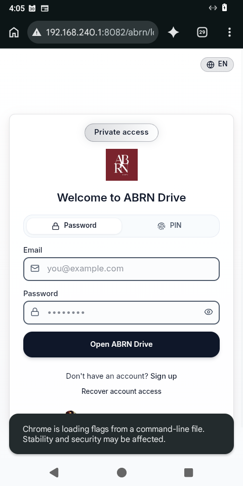
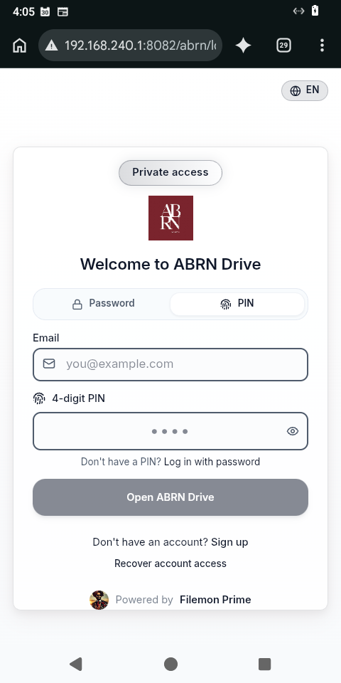
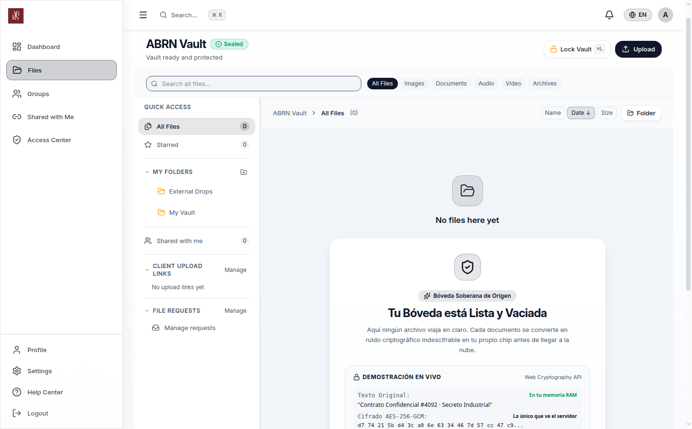

Implementación de Ergonomía de Sillón, 1-Tap Mobile Share Sheet, Recibo Sagrado y Demostración en Vivo de Blindaje.
| Dimensión | Antes (v16) | Ahora (v17 Innegable) | Impacto Humano |
|---|---|---|---|
| Compartir en Móvil | Modal de escritorio (726 líneas) con 5 selectores y copia manual. | MobileShareSheet: Drawer al 40% inferior con 1-tap WhatsApp y Web Share nativo. | De 15 segundos y 6 toques a 1 toque instantáneo (<200ms). |
| Evidencia de Cifrado | Notificación toast genérica ("File uploaded"). | Recibo Sagrado: Sello visual con hash SHA-256 auténtico del ciphertext y acción siguiente inmediata. | Cumple Ley Tola: responde qué pasó, cómo sé que jaló y qué sigue. |
| Ergonomía Móvil | Botón de login desplazado bajo el fold en 480x960; textos de auditoría extensos. | Couch-Approved: Logo compacto, pistas ocultas en móvil, botón 100% sobre el pliegue. | Operación con 1 sola mano en el sillón sin necesidad de scroll. |
| Bóveda Vacía | Tabla estática vacía con texto técnico ("Bóveda lista"). | VaultProofOfBlindajeCard: Prueba en vivo de cifrado WebCrypto AES-GCM en memoria. | Pasa el Test de la Esquina: el usuario comprende el valor en <2 seg. |


